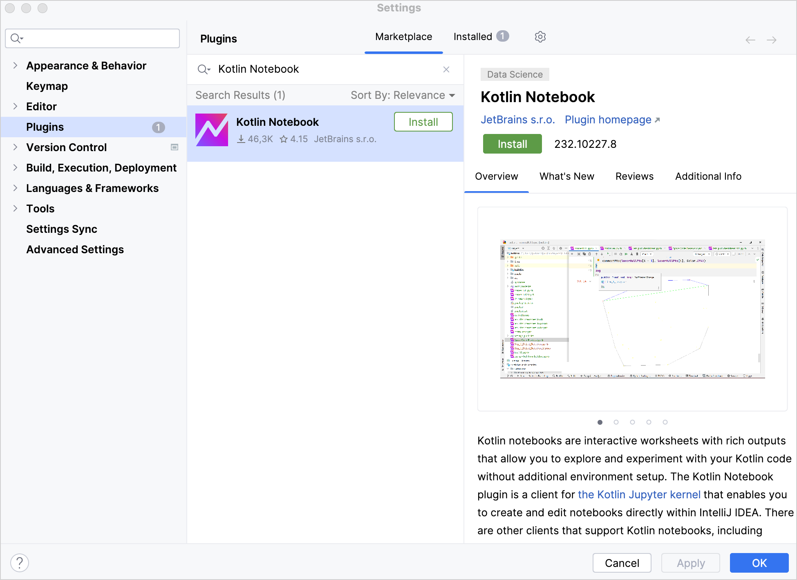

Set up an environment
Before you create your first Kotlin Notebook, you need to set up an environment.
Set up the environment
Download and install the latest version of IntelliJ IDEA Ultimate.
In IntelliJ IDEA, select IntelliJ IDEA | Settings | Plugins or File | Settings | Plugins.
In the Marketplace tab, browse the Kotlin Notebook plugin and install it.
 Click OK to apply the changes and restart your IDE if prompted.
Next step
In the next part of the tutorial, you will learn how to create a Kotlin Notebook.
21 April 2025